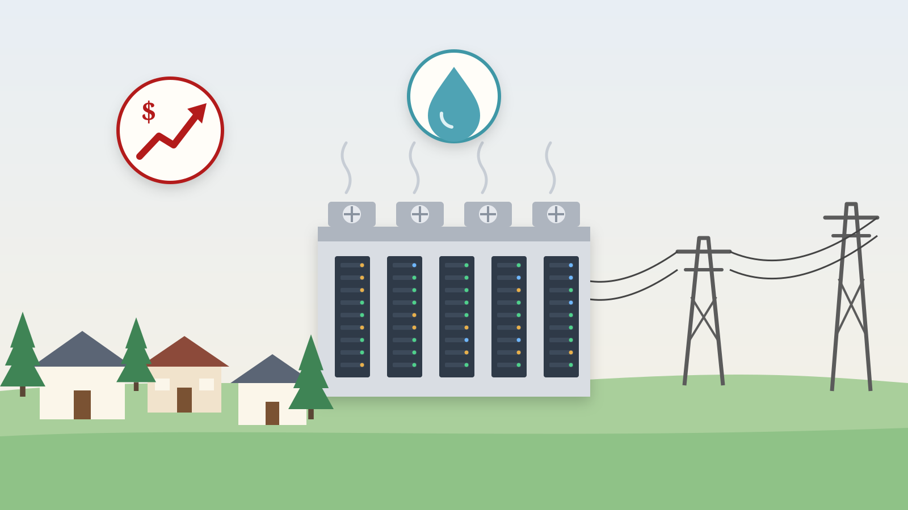
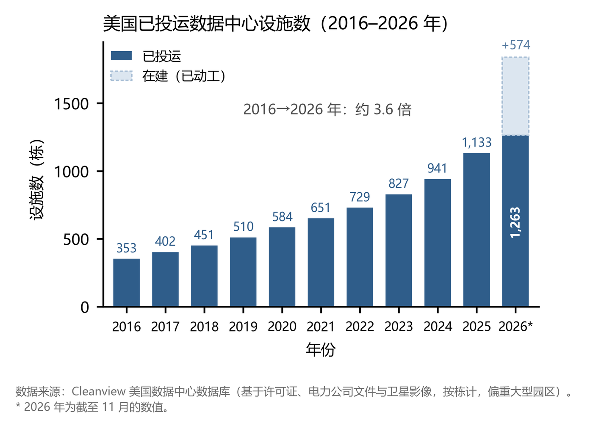
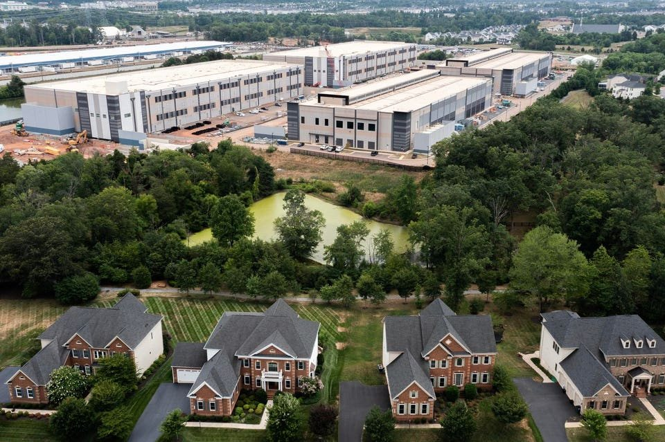
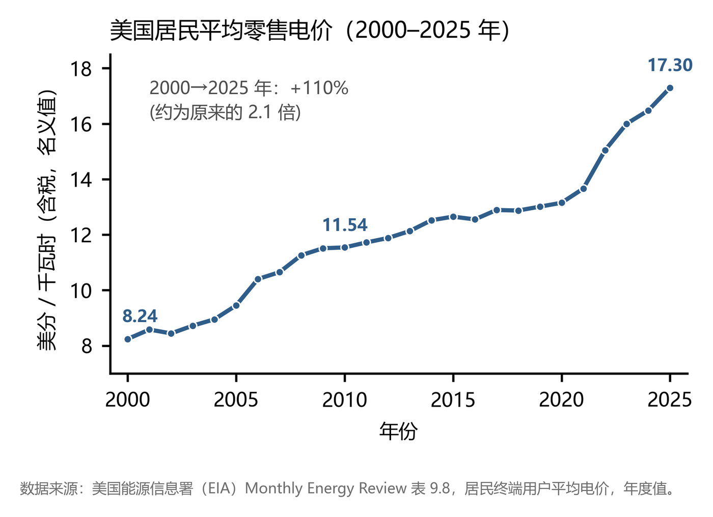
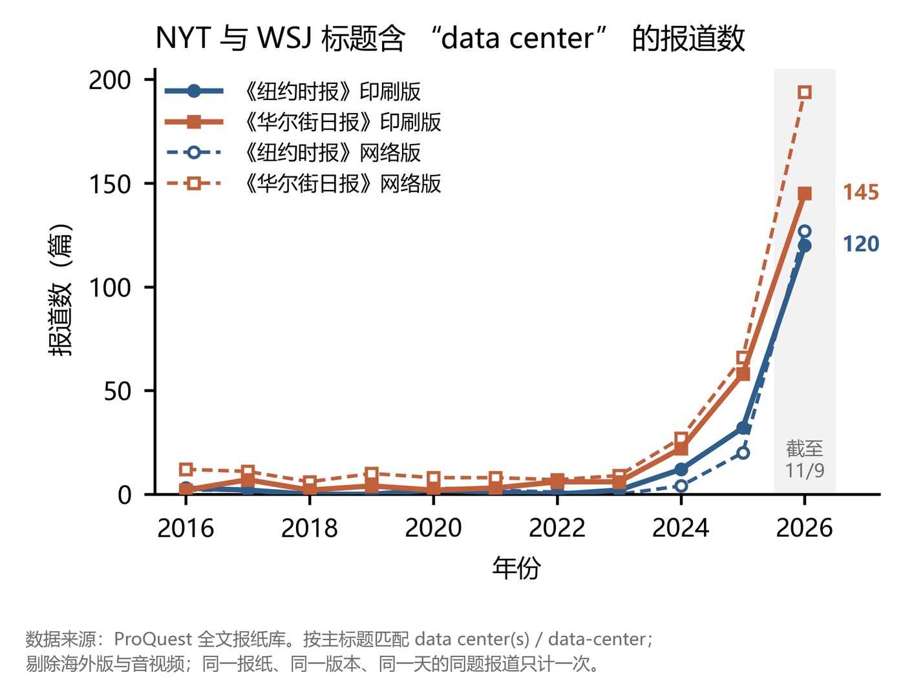
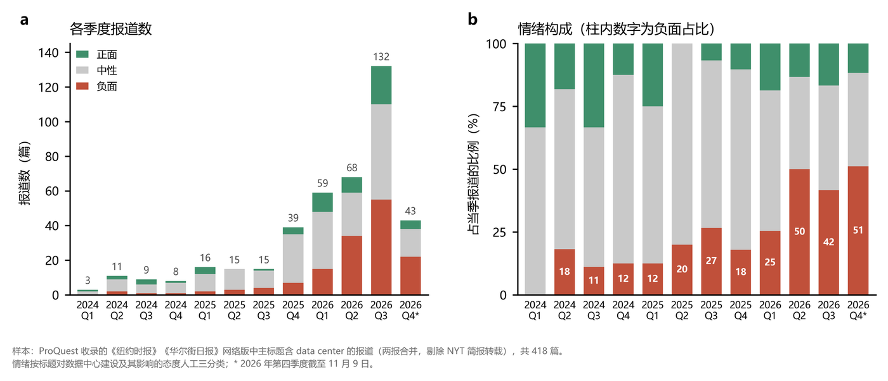

数据中心：美国人到底在争执什么？

如果说在刚刚过去的2026年中期选举中，什么问题最受关注，那么毫无疑问，一个是中东战争后价格飙涨的油价，而另一个是正在美国不断兴建的数据中心。油价可以理解，毕竟自从五十年前的滞涨时代开始，石油危机一直是美国国内执政者头顶的达摩克里斯之剑。然而，数据中心却是今年第一次成为美国政治的焦点问题。那么，数据中心为何会成为今年美国政治中最关键的议题之一？
01AI浪潮下的数据中心扩张
什么是数据中心？简单来说，数据中心就是一座装有大量服务器的建筑，负责存储、处理和传输数据。例如，当我们在电脑上向ChatGPT提问时，我们输入的内容，会通过电信号和光信号传输到OpenAI公司的数据中心，在其中的服务器里完成复杂的矩阵运算，得到输出结果后，再通过相同的渠道传回我们的电脑。

上图展示了2016-2026年美国数据中心设施的建设情况（Cleanview数据）。在2022年及之前，数据中心设施的数量尽管在不断增长，但可以看到每年新投运的数量大约在60-80个之间。然而，2022年ChatGPT出现之后，可以看到数据中心开始了加速增长：2023年新投运98个，2024年新投运114个，2025年增加到192个，而2026年尚未结束，但新增数量很可能再度迎来一个新高，并有超过500个数据中心正在建设中。尽管其它口径的统计数据对数据中心的定义可能存在差异，但整体趋势上，都可以看到2022年之后数据中心正在AI浪潮下快速扩张。
数据中心的建设对土地、电力和水资源拥有非常大的需求，这注定在美国建设一个数据中心并不容易。最关键的瓶颈在于电力。数据电力的耗电量非常大，根据美国能源部的估算，2023年美国数据中心的耗电量为176 TWh，大约占美国总用电量的4.4%，且预计到2028年会占比6.7%-12%。从目前的增速来看，到2028年，数据中心耗电量占比10%是完全有可能的事情。一个耗电量100 MW的超大型数据中心，其耗电量差不多相当于10万户居民的耗电量，这几乎是美国一个中等规模的城市。在这种情况下，电力需求能否满足，是电力中心选址的首要原则。例如，近期新加坡国立大学的一篇研究论文便发现，高耗电的大麻产业会“挤出”数据中心。
然而，遗憾的是，美国现在的能源基础设施远不足以满足数据中心的新增电力需求。这一阻碍来自于多个方面：第一，美国的电力输送容量有限，因为电力资源在空间上分布不均，且建设输电线路需要解决非常复杂的审批问题。第二，发电设施本身的建设存在困难：可再生能源面临川普政府的巨大政治阻力，而天然气发电厂所需的大型轮机目前面临严重的产能不足问题。
02为什么人们反对数据中心？
尽管数据中心对于AI发展至关重要，但必须要承认的一个事实是，数据中心的建设，对于其周边环境可能有大量潜在的负面影响，这些影响主要体现在景观、电力、水资源和噪声等几个方面。
数据中心最直接的影响在于景观。众所周知，美国和中国人口分布的一个典型区别是，美国人更多居住在郊区的单户住宅里，即所谓的Single-family House，一个典型的单户住宅往往处在郊区或者农村，占地面积较大，层数不多，常常还有花园、草坪等。在这种情况下，如果某个居民社区进驻了一个数据中心，可能会对整个社区的景观和环境产生灾难性的影响，并进而影响到房价。尽管和住宅区非常靠近的数据中心不多，但整体影响仍然不可小觑。今年一篇研究论文显示，数据中心的建设会导致周边房价下降大约6.8%，且这一负面影响能延申到距离数据中心十公里开外的地方。噪声也是伴随着这种距离邻近而自然产生的结果。

第二个潜在顾虑是电力。和中国居民面临的电价结构不同，美国的电力价格体系高度市场化。如下图所示，在最近二十年里，中国的居民电力零售价格几乎长期保持在0.5元/千瓦时的水平，而同期美国零售电价增长超过一倍。美国的电力市场结构非常复杂，简而言之，当发电成本、输配电成本或者调峰调频成本上升时，公用事业公司可以将这些成本转嫁给居民。因此，即使数据中心产生的额外需求没有直接“抢走”居民的电力，但由此带来的巨额投资成本，仍然会通过各种费用转嫁给居民。

数据中心导致电价增长了多少呢？目前的研究仍然相对较少。麻省理工学院能源环境政策研究中心近期的一篇工作论文综合了各类数据，发现2010 年至2024 年间，数据中心入驻使平均零售电价上涨了2.7%，其中居民用户的涨幅为2.1%。而来自美联储等机构的几位经济学家用另一类方法测算的结果则显示，截至2025年，数据中心在全国范围内已经让零售电价上升了6.9%，而到2028年，数据中心对零售电价的影响幅度将进一步攀升至12.3%。尽管方法不同，但这些研究得到了一致的结果：到目前为止，数据中心对居民的用电成本已经产生了不可忽视的影响。
第三个主要的担忧是水资源。数据中心对水资源的需求，主要是用于冷却目的。根据一项研究，2023年美国数据中心的用水量大约为174亿加仑，相当于约16万个美国家庭的用水量。这些冷却用水有高达 85% 会蒸发，而不会返回供水系统。从总量上来看，数据中心对水资源的影响相对较小。如果横向对比，美国高尔夫球场的用水量，甚至都比数据中心的用水量高出30倍以上。
尽管如此，数据中心对水资源的消耗仍然是一个问题，这个问题恰恰源于水资源并非数据中心建设的关键考量。由于并非关键因素，因此数据中心开发商在选址时，更多考虑的是电力问题、政策问题等，而不会将水资源纳入考虑。因此，许多数据中心建在加州、亚利桑那州等水资源短缺的区域。因此，这种空间上的错配可能进一步加剧数据中心的水资源负担。
03从科学到政治：数据中心何以成为政治焦点？
数据中心成为政策界讨论的热门话题，是出现在本轮AI狂潮之后。从下图可以看到，2024年开始，主流媒体对数据中心的关注才开始升温，一直到最近的中期选举达到高潮。事实上，早在2012年，《纽约时报》已经关注过数据中心带来的污染问题。在新一轮的报道热潮中，最早引发关注的是阿姆斯特丹大学商学院研究员Alex de Vries发表在期刊Joule上的一篇论文，随后《纽约时报》和《华尔街日报》分别在2023年10月和12月提出了对AI扩张中能源消耗问题的担忧，都引用了这篇论文。在2024年，媒体有时会讨论数据中心的能耗，但在更多时候，则是单纯在报道数据中心扩张的狂潮。

真正的转折点出现在2025年中期。进入2025年夏天之后，美国的电力价格开始新一轮上涨。关于这一轮上涨的原因，《纽约时报》在2025年6月13日的报道中指出了多个关键因素，第一个因素，也是主要因素，是天然气价格的上涨，第二个关键因素是电力基础设施开支的增加，包括设备老化、输电需求增加和极端天气等，而第三个因素则是PJM区域容量电价带来的额外成本，这部分成本主要源于数据中心。从这一时候开始，NYT和WSJ两大主流媒体在报道数据中心时，带有负面情绪的报道比例明显上升。

如果说2025年中期媒体的情绪变化，更多是将电力价格的上涨归因于数据中心，那么，关于数据中心的第二个转折点出现在2026年的夏季。从大约2026年3月底4月初开始，数据中心问题，开始从经济问题转变为政治问题。一个标志性的事件是2026年3月25日，两位著名的激进左翼人士，也是美国民主社会主义运动的两位核心领导者，佛蒙特州参议员Bernie Sanders和纽约州众议员AOC提出了《人工智能数据中心暂停法案》，呼吁暂停数据中心建设。Bernie和AOC的核心目的，在于以数据中心为切入口，限制AI发展与大型科技企业在经济中的话语权。
在两位左翼领袖的呼吁下，一些州纷纷跟进。2026年4月14日，缅因州议会通过法案，计划暂停批准用电负荷达到20 MW及以上的数据中心项目，尽管在随后被州长Janet Mills否决。2026年7月14日，纽约州长Kathy Hochul宣布暂停50 MW以上的数据中心建设，这是美国第一个州层面的数据中心禁令。也是在这一期间，大量州以下的地方政府也纷纷出台各种禁令，来限制数据中心的建设。也正是在2026年的第二个季度，数据中心正式上升为一个全国性的政治议题。这是民主党进步派人士的一个成功：他们以数据中心作为切入点，将普通民众对于AI发展、贫富分化和科技企业垄断的愤怒彻底点燃。这也为今年中期选举的蓝色海啸提供了巨大的助推力量。
在巨大的舆论压力下，一些之前本来支持数据中心发展的州和政客也转变了姿态，两个典型是宾夕法尼亚州和德克萨斯州。2025年11月，德州州长、共和党人Greg Abbott宣布德州将成为AI中心，但还不到一年，他便主动叫停了大量数据中心项目。尽管如此，Abbott还是在今年中期选举中丢失了连任三届的州长宝座。宾州州长、民主党人Josh Shapiro则也有着类似的态度大转弯，并一直在试图找到一个平衡点。事实上，在今年中期选举中，民主党人的制胜关键之一，就在于以数据中心为抓手，向对手发起了攻击。在川普高呼“美国各地社区不愿建设数据中心的唯一原因，就是他们想变得落后和贫穷”的时候，这种弱点是致命性的。
← 返回 Academic Blog